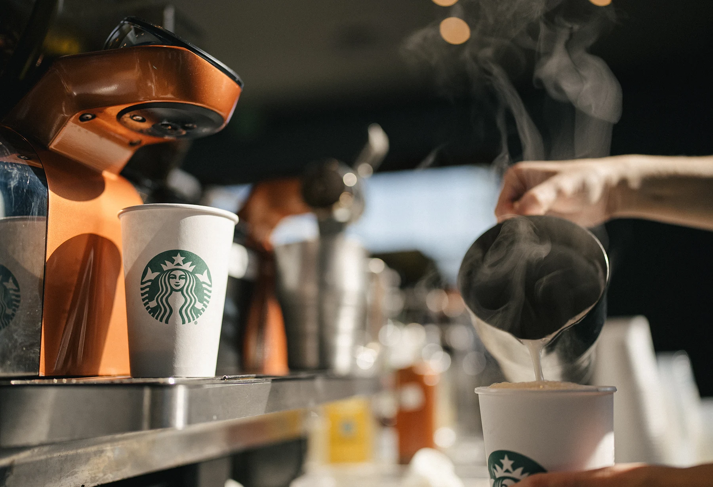

Produto com identidade
Café, preparo e personalização devem sustentar a percepção de qualidade.
PLANEJAMENTO ESTRATÉGICO · 2026
Transformar a experiência do cliente em preferência, recorrência e crescimento.

Um café.
Uma conexão.
Uma nova visita.
01 / MARCA E POSICIONAMENTO
A escolha de uma cafeteria envolve o que se bebe, como se é atendido e como se sente naquele espaço.
DE SEATTLE PARA O MUNDO
Fundada em 1971, em Seattle, a Starbucks começou com a venda de café em grãos, chá e especiarias. Sua identidade conecta conhecimento sobre café e convivência.[1]
Ser referência em café de qualidade e inspirar a conexão humana, de pessoa em pessoa e de comunidade em comunidade.[2]
Café, preparo e personalização devem sustentar a percepção de qualidade.
A promessa da marca precisa aparecer na precisão do pedido e no cuidado com cada cliente.
Um espaço acolhedor dá sentido à visita e amplia as ocasiões de consumo.
02 / PÚBLICO E JORNADA
Segmentar pela necessidade da visita torna a comunicação mais útil do que definir uma faixa etária sem pesquisa.
Quem precisa de praticidade antes do trabalho, entre compromissos ou no intervalo das aulas.
Quem procura um ambiente para conversar, estudar ou fazer uma pausa com mais conforto.
Quem valoriza preparo, opções de personalização e novidades que façam sentido para seu gosto.
Segmentos propostos para o estudo. Validar por observação da loja e entrevistas curtas; não representam um perfil demográfico oficial.
03 / DIAGNÓSTICO SWOT
A análise conecta condições internas e externas às decisões do plano. É uma interpretação acadêmica, a validar na operação.
Usar para criar preferência e orientar a recomendação de produtos.
Corrigir com clareza de valor e padronização do fluxo de trabalho.
Explorar com campanhas pontuais e testes de baixo custo.
Responder com controle de margem e serviço consistente.
Os riscos de concorrência, custos e mudanças na demanda também aparecem nas divulgações corporativas da empresa.[4]
04 / OBJETIVOS E METAS
Quatro prioridades para uma loja-piloto: mais visitas, melhor atendimento, maior recorrência e menos desperdício.
+8%
Estimular visitas com campanhas locais, sem reduzir a margem de contribuição percentual.
Responsável: gestão + marketing−15%
Reduzir a mediana entre confirmação do pedido e entrega nos horários de pico.
Responsável: liderança de turno+5 p.p.
Aumentar a proporção de clientes identificados que fazem uma nova compra no período.
Responsável: gestão + atendimento−10%
Reduzir gramas de ingredientes descartados a cada 100 bebidas vendidas.
Responsável: estoque + operação05 / ESTRATÉGIA DE MARKETING
Cada ação precisa ligar uma ocasião de consumo a um comportamento que possa ser medido.
Mostrar como café, personalização e acolhimento cabem em diferentes momentos do dia.
Trazer visitas aos períodos de menor movimento e observar se os clientes retornam.
Conteúdo de preparo, sugestões de bebidas e informação local em canais autorizados.
Medir: visitas qualificadas ao perfil e à página da loja.Testar uma combinação de bebida e alimento em horário definido, com margem aprovada.
Medir: resgates, transações e contribuição da oferta.Comunicar novidades e benefícios pelos recursos de fidelização disponíveis na operação local.
Medir: recompra em 30 dias, além de adesões.Ouvir avaliações, responder dúvidas e resolver falhas que prejudicam a experiência.
Medir: temas recorrentes e tempo de solução.Campanha ilustrativa. Ofertas, canais, benefícios e uso de dados dependem das regras e recursos da operação local.
06 / PLANO DE EXECUÇÃO
Começar em uma loja, criar uma referência confiável e ampliar apenas o que demonstrar resultado.
Entrega: diagnóstico, linha de base e metas validadas.
Entrega: relatório semanal de desempenho e custos.
Entrega: decisão de manter, ampliar ou interromper cada ação.
Uma reunião semanal de 20 minutos: resultado, causa do desvio, ação corretiva e responsável pela próxima entrega.
07 / INDICADORES DE DESEMPENHO
Curtidas e alcance ajudam a entender a comunicação. A decisão de continuar uma ação depende do efeito na operação.
| Indicador | Como calcular | Fonte e frequência | Meta proposta |
|---|---|---|---|
| 01Transações por dia | Pedidos pagos ÷ dias de operação. Comparar dias e faixas horárias equivalentes. | Sistema de vendas Registro diário; revisão semanal. | +8% |
| 02Tempo de atendimento | Mediana dos minutos entre confirmação e entrega. Separar os horários de pico. | Horários do pedido ou amostra cronometrada Revisão semanal. | −15% |
| 03Recompra em 30 dias | Clientes de uma coorte com nova compra em até 30 dias ÷ clientes da coorte × 100. Usar coortes completas e identificação autorizada. | Base autorizada de relacionamento Coortes: dias 1–14 e 46–60. | +5 p.p. |
| 04Desperdício | Gramas descartadas ÷ bebidas vendidas × 100. Registrar motivos e tipo de ingrediente. | Controle de descarte + vendas Registro diário; revisão semanal. | −10% |
Sem identificação autorizada de clientes, medir satisfação como indicador auxiliar; não apresentar uma estimativa de recompra como se fosse observada.
08 / OPERAÇÃO RESPONSÁVEL
Uma comunicação responsável começa por práticas verificáveis na rotina da loja.
Revisar previsão de demanda, validade e porcionamento. Registrar a causa do descarte antes de decidir a correção.
Indicador: gramas descartadas por 100 bebidas.Avaliar copos reutilizáveis onde o procedimento for permitido e operacionalmente viável, com orientação clara à equipe.
Indicador: participação das bebidas servidas em reutilizáveis.Explicar práticas e resultados medidos, com período e escopo. Evitar atribuir um benefício ambiental sem comprovação.
Indicador: ações documentadas e evolução mensal.O relatório global de impacto FY2025 informa iniciativas sobre café, comunidades, energia e resíduos. Resultados globais não comprovam, por si só, o desempenho de uma loja específica.[5]
09 / RISCOS E VIABILIDADE
Uma ação só faz sentido se a loja conseguir executá-la com qualidade e retorno econômico.
O desconto pode aumentar o volume e reduzir a contribuição de cada venda.
Calcular custo variável, limitar duração e verificar se houve vendas adicionais.
Uma campanha pode aumentar filas e comprometer a experiência prometida.
Concentrar o teste fora do pico e ajustar a escala antes de ampliar.
Oscilações de insumos e previsão inadequada podem pressionar o resultado.
Revisar compras, desperdício e contribuição por produto semanalmente.
Se a margem de contribuição percentual ficar abaixo da linha de base por duas semanas, ou se o tempo de atendimento piorar mais de 10%, revisar a ação antes de continuar.
Critérios ilustrativos de decisão, sujeitos à validação da gestão.10 / DECISÃO ESTRATÉGICA
O caminho proposto é fortalecer o que o cliente percebe: um bom café, um atendimento confiável e um motivo para voltar.
Treinar rotinas e corrigir falhas que atrapalham a experiência.
Relacionar cada campanha a uma ocasião e a um resultado esperado.
Manter o que gera recorrência, preserva margem e cabe na operação.
11 / FONTES E CRITÉRIOS
Documentos oficiais sustentam o contexto da empresa. O diagnóstico e o plano de 90 dias são elaborações deste estudo.
Starbucks, 2026. Origem e perfil da empresa.
Starbucks, 9 jan. 2025. Missão, identidade e conexão humana.
Starbucks, 29 jan. 2026. Atendimento, experiência e crescimento.
Starbucks, 29 out. 2025. Contexto operacional e fatores de risco.
Starbucks. Práticas e resultados globais de impacto.
Fotografia de capa: Starbucks Stories. Marca citada para fins de estudo; apresentação independente.